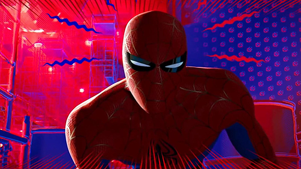

Peter Parker
Your Friendly Neighborhood Spider-Man

- Peter Parker has been Spider-Man since the 60s.
- He's also been cloned several times
- And he's always broke, somehow
Experience
Goblins (1964-Present)
Has fought lots of goblins. Here's a list of relevant goblins:
- Green Goblin
- Red Goblin
- Hobgoblin
- Whatever Goblin James Franco was supposed to be in Spider-Man 3
Symbiotes (1984-Present)
So many goopy foes:
- Venom
- Carnage
- Scream
- Red Goblin, who somehow is both goop and goblin
Green Dudes (1964-Present)
Green is a popular color for even in NYC
- Scorpion
- Mysterio
- Vulture
- Lasher, who is both green and goopy